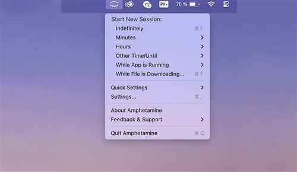
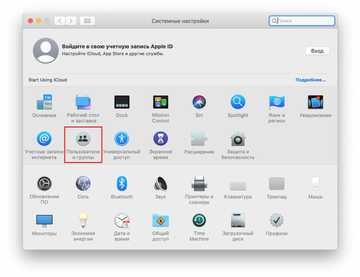
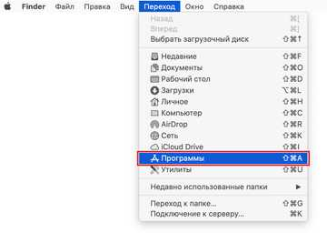
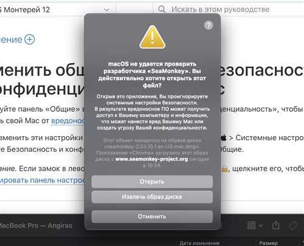

Существует множество причин, по которым пользователи Mac OS могут столкнуться с проблемой, когда операционная система не подтверждает безопасность запускаемого приложения. Это может вызвать множество неудобств, особенно если вам необходимо использовать определенное программное обеспечение для работы или учёбы. Такие предупреждения могут быть вызваны различными факторами, включая недостаточную подпись приложения или его непризнание системой в силу различных настроек безопасности.
Важно понимать, что данная проблема не обязательно указывает на наличие вредоносного ПО, а скорее является частью строгой системы защиты, разработанной Apple для обеспечения безопасности пользователей. Тем не менее, возникает закономерный вопрос: что делать в такой ситуации? В этой статье мы рассмотрим самые распространенные причины, по которым Mac OS может блокировать приложение, и предложим решения, которые помогут вам без каких-либо проблем запускать нужное ПО.
Перед тем как перейти к конкретным шагам, стоит отметить, что использование приложений, не подтвержденных сертификатом, может нести в себе определенные риски. Убедитесь, что вы загружаете программы только из надежных источников. Однако если вы уверены в безопасности приложения, следуйте представленным рекомендациям, чтобы вернуть контроль над своей системой и продолжить работу.
Как изменить настройки безопасности в Mac OS для установки неподписанных приложений?
Если вы столкнулись с проблемой установки неподписанных приложений на Mac OS, следуйте этим шагам, чтобы изменить настройки безопасности системы.
Шаг 1: Открытие системных настроек
Начните с открытия Системных настроек. Для этого нажмите на логотип Apple в верхнем левом углу экрана и выберите пункт Системные настройки из выпадающего меню.
Шаг 2: Настройка безопасности

В окне Системные настройки найдите и выберите раздел Безопасность и конфиденциальность. В этом разделе вы увидите вкладку Основные, на которой будут указаны настройки безопасности.
Нажмите на иконку замка в левом нижнем углу, чтобы разблокировать настройки. Введите пароль администратора, когда появится соответствующий запрос.
В разделе Разрешить программы загружать из: выберите опцию Любой источник или разрешите установку только из App Store и идентифицированных разработчиков, если вы желаете повысить уровень безопасности.
Пожалуйста, обратите внимание, что выбор Любой источник может повысить риски, связанный с безопасностью, так как позволит устанавливать приложения из ненадежных источников.
После внесения изменений не забудьте снова заблокировать настройки, нажав на иконку замка.
Теперь вы сможете установить неподписанные приложения на ваш Mac.
Что делать, если приложение заблокировано: обход ошибок безопасности?

Если вы столкнулись с ситуацией, когда Mac OS блокирует запуск приложения, которое вы уверены в его безопасности, можно выполнить несколько шагов, чтобы обойти данную проблему. Обычно это происходит из-за настроек системы, предназначенных для защиты от потенциально вредоносного ПО.
Шаг 1: Изменение настроек безопасности

Первым делом откройте «Системные настройки» и перейдите в раздел «Безопасность и конфиденциальность». На вкладке «Основные» вы увидите уведомление о том, что приложение было заблокировано. Вам будет предложено разрешить его запуск. Нажмите на кнопку «Разрешить», и приложение сможет открываться без препятствий.
Шаг 2: Запуск приложения через контекстное меню

Если первый метод не помог, попробуйте другой способ. Найдите приложение в Finder, нажмите правой кнопкой мыши (или зажмите клавишу Control и кликните) на иконке приложения и выберите пункт «Открыть». В этом случае появится предупреждение о безопасности, но будет доступна кнопка «Открыть», которая позволит запустить приложение.
Как восстановить доступ к установленному приложению после изменения настроек безопасности?
Если вы столкнулись с проблемой доступа к приложению после изменения настроек безопасности в Mac OS, не стоит паниковать. Существуют несколько шагов, которые помогут вам восстановить доступ к нужному приложению.
Шаг 1: Проверка настроек безопасности

Перейдите в «Системные настройки» и откройте раздел «Безопасность и конфиденциальность». Убедитесь, что в разделе «Основные» выбраны правильные настройки для скачивания приложений. Если выбрана опция «App Store и идентифицированные разработчики», изменения могут быть необходимы, чтобы разрешить установку определённого приложения.
Шаг 2: Разрешение запуска приложения

После того как вы вернётесь в раздел «Безопасность и конфиденциальность», попробуйте открыть приложение снова. Если появится сообщение о том, что приложение заблокировано, нажмите на кнопку «Открыть всё равно». Это действие временно обойдёт ограничения и позволит вам запустить приложение. Также можно удерживать клавишу Option, пока вы щёлкаете по иконке приложения, чтобы вызвать опцию «Открыть».